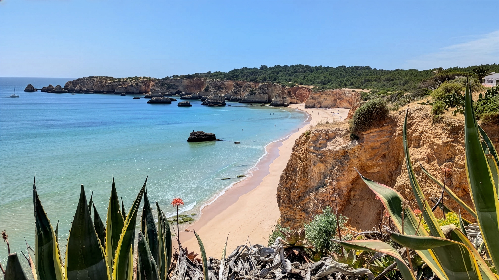
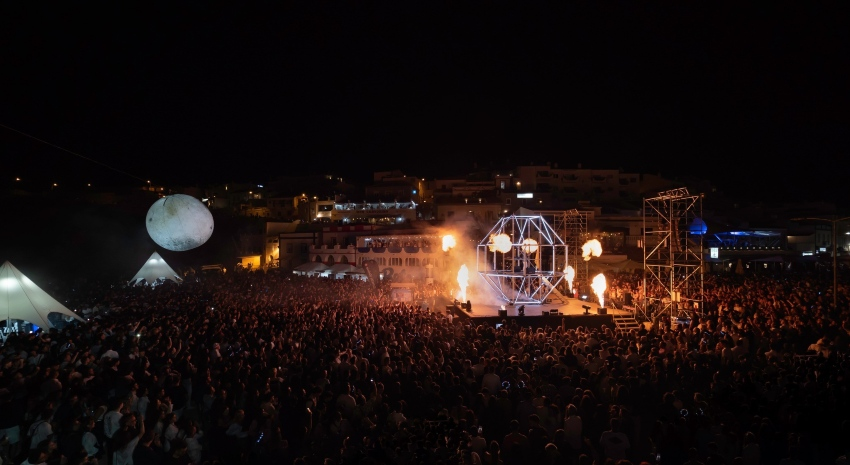
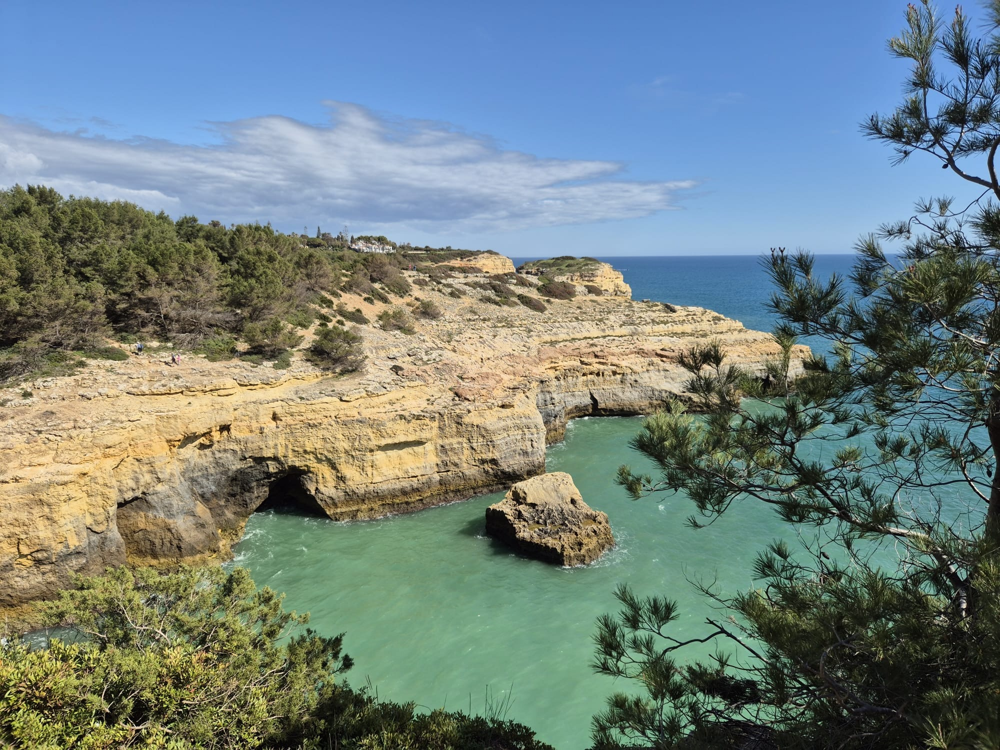
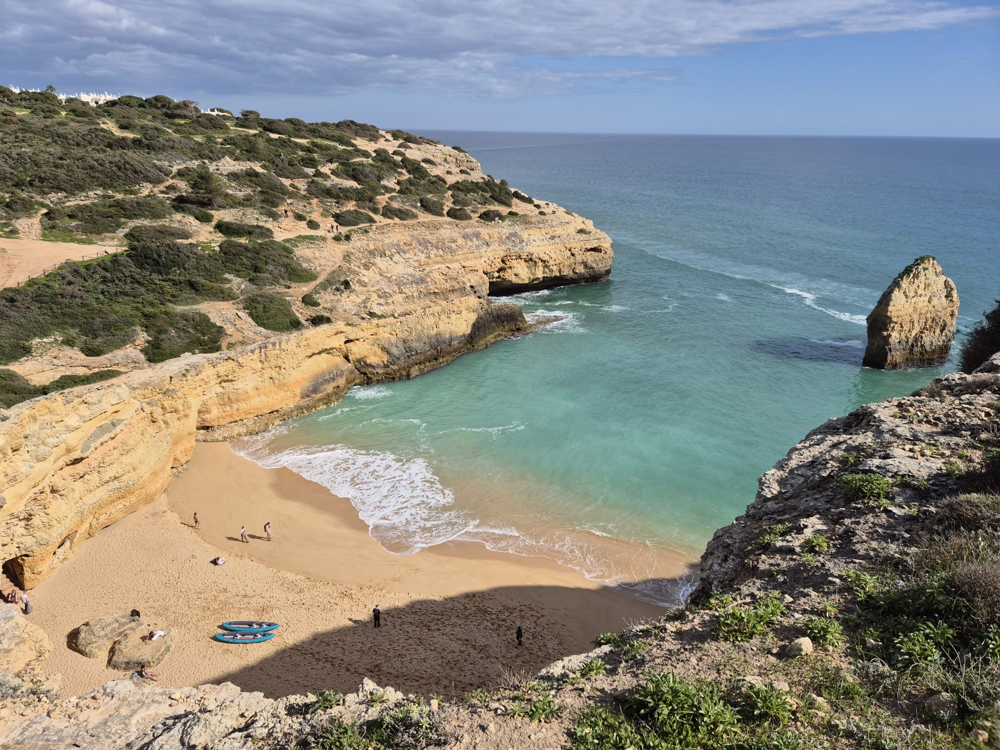
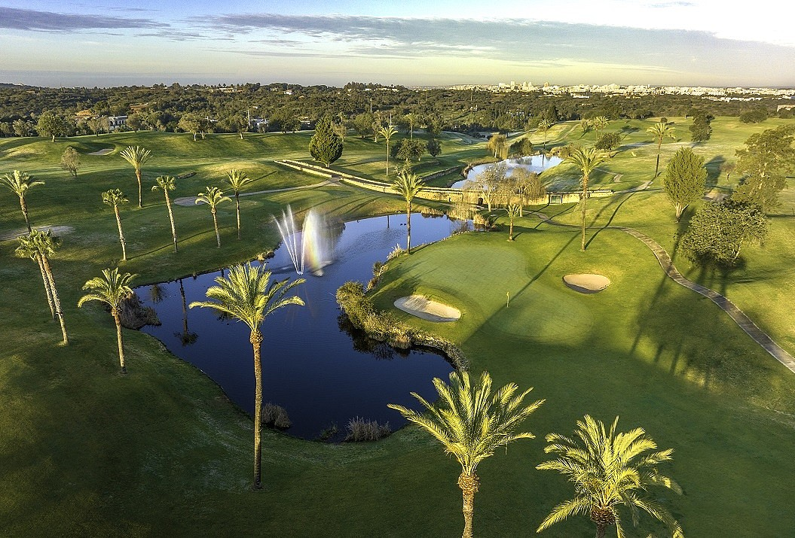
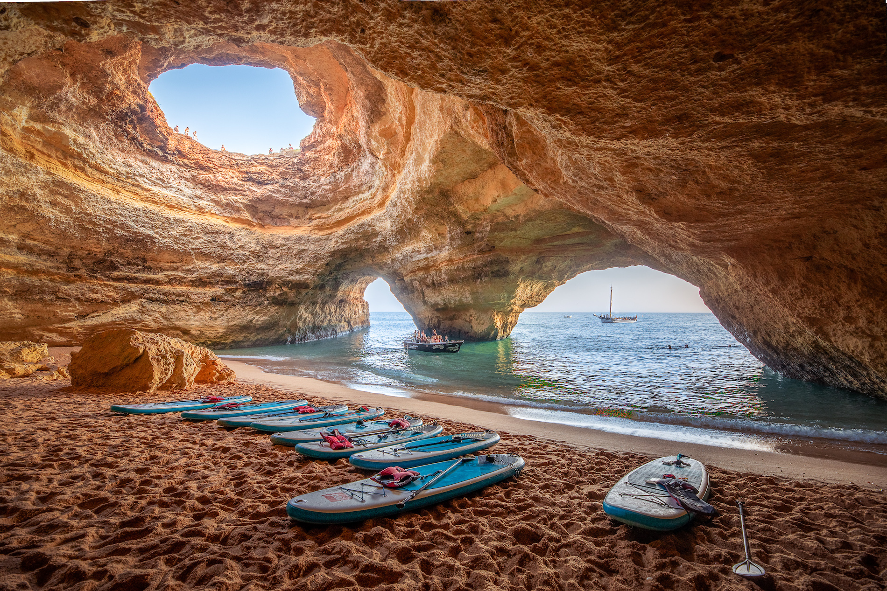

Das Carvoeiro Black & White Night Festival verwandelt den Küstenort für eine Nacht in eine große, stimmungsvoll geschmückte Festmeile. Live-Musik, DJs, Tanz und Straßenkunst sorgen an verschiedenen Plätzen für beste Unterhaltung. Ganz in Schwarz und Weiß gekleidet, feiern Besucher gemeinsam eine unvergessliche Sommernacht an der Algarve.

Der Wanderweg der Sieben Hängenden Täler zählt zu den schönsten Routen an der Algarve. Entlang der beeindruckenden Steilküste führt er vorbei an goldenen Felsen, versteckten Buchten und spektakulären Aussichtspunkten. Die abwechslungsreiche Landschaft und der Blick auf den Atlantik machen die Wanderung zu einem unvergesslichen Naturerlebnis.

Die Strände Praia de Carvoeiro, Praia do Paraíso und Praia do Vale de Centeanes begeistern mit goldenem Sand, klarem Wasser und beeindruckenden Felslandschaften. Ob lebhaft, versteckt oder weitläufig – jeder Strand zeigt eine besondere Seite der Algarve.

Die Golfplätze rund um Carvoeiro bieten abwechslungsreiche Fairways, gepflegte Greens und wunderschöne Ausblicke auf die Algarve. Anlagen wie Gramacho, Vale da Pinta und Silves Golf begeistern Anfänger und erfahrene Spieler gleichermaßen. Dank des milden Klimas ist die Region ideal für ganzjähriges Golfvergnügen.

Die Benagil-Höhle zählt zu den beeindruckendsten Naturwundern der Algarve. Ihre imposante Felskuppel, der goldene Sand und das einfallende Sonnenlicht schaffen eine einzigartige Atmosphäre. Besonders vom Wasser aus bietet sie ein unvergessliches Erlebnis.